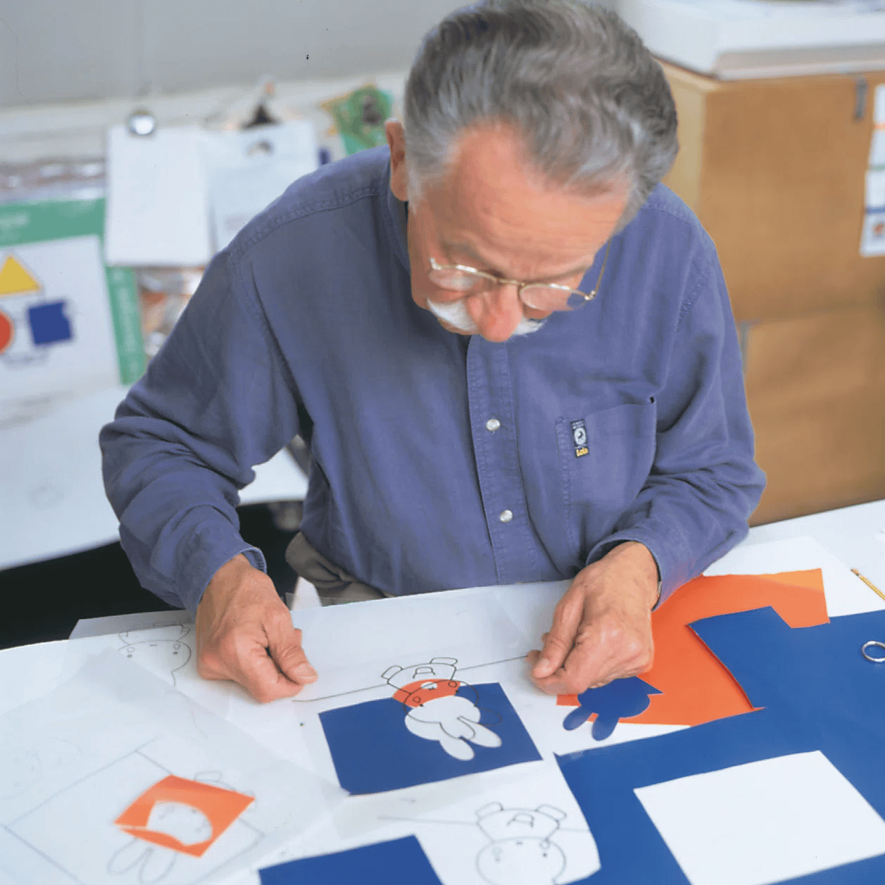
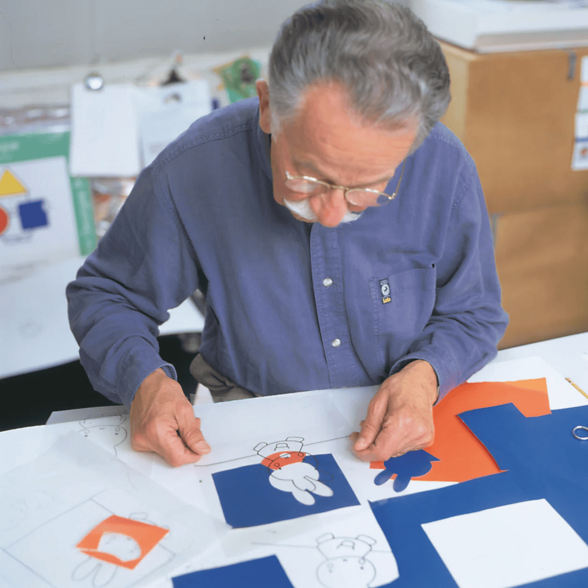

MIFFY
Design:
Dick Bruna
Grazie al look semplice e pulito, la coniglietta Miffy, personaggio classico creato dall’artista Dick Bruna, è una beniamina di grandi e piccini di tutto il mondo da decine di anni.
L’arte della semplicità
Dick Bruna credeva in una regola fondamentale: “di meno è di più”. I suoi disegni, caratterizzati da contorni neri marcati e colori vivaci, trasmettono emozione attraverso forme ridotte all’essenziale. Ogni personaggio guarda dritto negli occhi del lettore, stabilendo un contatto diretto e immediato.
Il processo creativo
Bruna ha sviluppato nel tempo un metodo tutto suo, rigoroso e manuale:
Schizzo
Realizzato su fogli trasparenti.
Tracciatura
Trasferimento su carta da acquerello e contorni dipinti a mano.
Colorazione
Scelta di colori personalizzati, mai standard, con leggere sfumature più scure.
Ritaglio
Le forme venivano tagliate con precisione da carta colorata esclusiva, come se disegnasse con le forbici.
Composizione finale
Silhouette colorate e pellicole con i contorni venivano inviate al tipografo.
 


Colori e caratteri
Bruna utilizzava solo una palette ristretta: rosso, blu, giallo, verde, nero — più raramente marrone, grigio e arancione. Ogni colore era mescolato ad hoc, con leggere variazioni rispetto ai primari per ottenere tonalità uniche. Anche la tipografia rifletteva la sua filosofia: caratteri sans-serif, niente maiuscole né segni di punteggiatura superflui.

Mai di profilo
I personaggi di Bruna non vengono mai rappresentati di lato. Guardano sempre frontalmente o, al massimo, di spalle. Questo perché lo sguardo diretto è ciò che crea connessione e impatto visivo.
Oltre i libri: il design applicato
Lo stile inconfondibile di Miffy è stato adottato in molti prodotti di design, sempre nel rispetto della filosofia originale:
- Borracce: con linee morbide e colori caldi, realizzate in silicone, ideali per tutte le età.
- Bigiotteria: minimalista, ottimista e accessibile.
- Tazze in ceramica: eleganti e sostenibili, con illustrazioni essenziali.
- Penne con corona: stilose e pure nella forma, arricchite da piccoli dettagli simbolici.